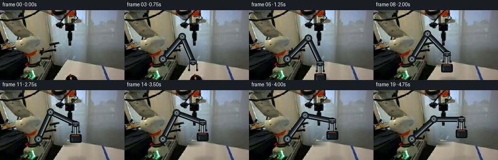
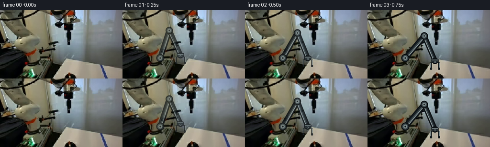

CODING AGENTS AS PIXEL WORLD MODELS
traex/DeepSeek-V4.1-Flash · common50_0012
点击播放 · 原生 RGB 像素
逐轮保存的候选
回放视频、检查图与代码变化。
每份候选均可单独播放。实际图片检查记录在下方工具轨迹中。
候选 01播放与检查图
点击播放 · 原生 RGB 像素


展开代码变化
--- 上一保存版本
+++ 本次保存版本
@@ -0,0 +1,352 @@
+from __future__ import annotations
+
+from pathlib import Path
+import math
+
+import cv2
+import numpy as np
+from PIL import Image, ImageDraw, ImageFilter
+
+import artifact_io
+
+
+ROOT = Path(__file__).resolve().parent
+W, H = 256, 144
+N_FRAMES = 20
+SS = 4
+
+
+def smoothstep(t: float) -> float:
+ t = max(0.0, min(1.0, t))
+ return t * t * (3.0 - 2.0 * t)
+
+
+def ease(t: float) -> float:
+ t = max(0.0, min(1.0, t))
+ return 0.5 - 0.5 * math.cos(math.pi * t)
+
+
+def lerp_point(a: tuple[float, float], b: tuple[float, float], t: float) -> tuple[float, float]:
+ return (a[0] + (b[0] - a[0]) * t, a[1] + (b[1] - a[1]) * t)
+
+
+def inpaint_target(scene: np.ndarray) -> np.ndarray:
+ """Remove the movable stopper from the work surface."""
+ mask = np.zeros((H, W), dtype=np.uint8)
+ cv2.rectangle(mask, (132, 105), (161, 143), 255, -1)
+ cleaned = cv2.inpaint(scene, mask, 7, cv2.INPAINT_TELEA)
+
+ # Reassert the quiet warm-table gradient over the inpainted patch. The
+ # local edge colors make this blend seamlessly with the original surface.
+ x0, x1 = 131, 163
+ for y in range(104, H):
+ left = cleaned[y, x0 - 3 : x0].astype(np.float32).mean(0)
+ right = cleaned[y, x1 : x1 + 3].astype(np.float32).mean(0)
+ span = np.linspace(0.0, 1.0, x1 - x0, dtype=np.float32)[:, None]
+ row = left[None, :] * (1.0 - span) + right[None, :] * span
+ cleaned[y, x0:x1] = np.clip(row, 0, 255).astype(np.uint8)
+
+ # Soft vertical falloff prevents a rectangular repair seam.
+ alpha = np.zeros((H, W), dtype=np.float32)
+ alpha[104:144, 131:163] = 1.0
+ alpha = cv2.GaussianBlur(alpha, (0, 0), 1.4)[..., None]
+ return np.clip(
+ scene.astype(np.float32) * (1.0 - alpha) + cleaned.astype(np.float32) * alpha,
+ 0,
+ 255,
+ ).astype(np.uint8)
+
+
+def add_shadow(frame: Image.Image, center: tuple[float, float], strength: float, spread: float) -> None:
+ if strength <= 0.01:
+ return
+ layer = Image.new("RGBA", (W * SS, H * SS), (0, 0, 0, 0))
+ draw = ImageDraw.Draw(layer)
+ x, y = center[0] * SS, center[1] * SS
+ rx = (14.0 + spread * 7.0) * SS
+ ry = (3.0 + spread * 2.0) * SS
+ value = int(88 * strength)
+ draw.ellipse((x - rx, y - ry, x + rx, y + ry), fill=(5, 8, 8, value))
+ layer = layer.filter(ImageFilter.GaussianBlur(2.2 * SS))
+ frame.alpha_composite(layer)
+
+
+def segment(
+ draw: ImageDraw.ImageDraw,
+ p0: tuple[float, float],
+ p1: tuple[float, float],
+ width: float,
+) -> None:
+ """Draw a restrained, beveled metal linkage."""
+ a = (p0[0] * SS, p0[1] * SS)
+ b = (p1[0] * SS, p1[1] * SS)
+ w = width * SS
+ draw.line((a, b), fill=(12, 17, 20, 255), width=int(w + 5 * SS))
+ draw.line((a, b), fill=(43, 53, 58, 255), width=int(w))
+ draw.line((a, b), fill=(62, 74, 78, 255), width=int(max(1, w - 5 * SS)))
+
+ dx, dy = b[0] - a[0], b[1] - a[1]
+ length = math.hypot(dx, dy) or 1.0
+ nx, ny = -dy / length, dx / length
+ off = 2.0 * SS
+ ha = (a[0] + nx * off, a[1] + ny * off)
+ hb = (b[0] + nx * off, b[1] + ny * off)
+ draw.line((ha, hb), fill=(145, 157, 158, 255), width=max(1, int(1.5 * SS)))
+
+ off2 = -2.2 * SS
+ sa = (a[0] + nx * off2, a[1] + ny * off2)
+ sb = (b[0] + nx * off2, b[1] + ny * off2)
+ draw.line((sa, sb), fill=(24, 31, 35, 255), width=max(1, int(2.0 * SS)))
+
+
+def joint(draw: ImageDraw.ImageDraw, p: tuple[float, float], radius: float) -> None:
+ x, y, r = p[0] * SS, p[1] * SS, radius * SS
+ draw.ellipse((x - r - 2 * SS, y - r - 2 * SS, x + r + 2 * SS, y + r + 2 * SS),
+ fill=(10, 14, 17, 255))
+ draw.ellipse((x - r, y - r, x + r, y + r), fill=(55, 67, 71, 255))
+ draw.ellipse((x - r * 0.63, y - r * 0.63, x + r * 0.63, y + r * 0.63),
+ fill=(119, 132, 133, 255))
+ draw.ellipse((x - r * 0.24, y - r * 0.24, x + r * 0.24, y + r * 0.24),
+ fill=(22, 28, 31, 255))
+
+
+def solve_elbow(
+ shoulder: tuple[float, float],
+ wrist: tuple[float, float],
+ upper: float,
+ fore: float,
+) -> tuple[float, float]:
+ sx, sy = shoulder
+ wx, wy = wrist
+ dx, dy = wx - sx, wy - sy
+ d = max(1e-4, min(math.hypot(dx, dy), upper + fore - 1e-3))
+ ux, uy = dx / math.hypot(dx, dy), dy / math.hypot(dx, dy)
+ a = (upper * upper - fore * fore + d * d) / (2.0 * d)
+ h = math.sqrt(max(0.0, upper * upper - a * a))
+ mx, my = sx + ux * a, sy + uy * a
+ e1 = (mx - uy * h, my + ux * h)
+ e2 = (mx + uy * h, my - ux * h)
+ # Keep the elbow above the linkage for a stable, readable silhouette.
+ return e1 if e1[1] < e2[1] else e2
+
+
+def draw_gripper(draw: ImageDraw.ImageDraw, wrist: tuple[float, float], spread: float) -> None:
+ x, y = wrist[0] * SS, wrist[1] * SS
+ palm_w = 15.0 * SS
+ palm_h = 9.0 * SS
+ draw.rounded_rectangle(
+ (x - palm_w / 2, y - palm_h / 2, x + palm_w / 2, y + palm_h / 2),
+ radius=2.3 * SS,
+ fill=(33, 41, 45, 255),
+ outline=(8, 12, 14, 255),
+ width=int(1.2 * SS),
+ )
+ draw.line((x - 6.0 * SS, y - 2.0 * SS, x + 6.0 * SS, y - 2.0 * SS),
+ fill=(136, 149, 150, 255), width=int(1.3 * SS))
+ draw.ellipse((x - 2.0 * SS, y + 0.1 * SS, x + 2.0 * SS, y + 4.1 * SS),
+ fill=(111, 125, 128, 255))
+ draw.ellipse((x - 1.1 * SS, y + 1.0 * SS, x + 1.1 * SS, y + 3.2 * SS),
+ fill=(24, 30, 33, 255))
+
+ gap = spread * SS
+ top = y + 3.0 * SS
+ bottom = y + 17.0 * SS
+ finger_w = 3.2 * SS
+ for side in (-1, 1):
+ cx = x + side * gap
+ draw.rounded_rectangle(
+ (cx - finger_w / 2, top, cx + finger_w / 2, bottom),
+ radius=1.3 * SS,
+ fill=(42, 51, 55, 255),
+ outline=(10, 14, 16, 255),
+ width=int(1.1 * SS),
+ )
+ hx = cx + side * 1.0 * SS
+ draw.line((hx, top + 1.0 * SS, hx, bottom - 2.0 * SS),
+ fill=(160, 172, 171, 255), width=max(1, int(1.0 * SS)))
+ draw.rounded_rectangle(
+ (cx - 2.0 * SS, bottom - 2.7 * SS, cx + 2.0 * SS, bottom + 1.5 * SS),
+ radius=0.9 * SS,
+ fill=(30, 38, 41, 255),
+ outline=(8, 11, 13, 255),
+ width=int(0.8 * SS),
+ )
+
+
+def draw_arm(
+ frame: Image.Image,
+ wrist: tuple[float, float],
+ spread: float,
+ alpha: float,
+) -> None:
+ shoulder = (79.0, 101.0)
+ elbow = solve_elbow(shoulder, wrist, 61.0, 57.0)
+ layer = Image.new("RGBA", (W * SS, H * SS), (0, 0, 0, 0))
+ draw = ImageDraw.Draw(layer)
+ segment(draw, shoulder, elbow, 7.0)
+ segment(draw, elbow, wrist, 6.0)
+ joint(draw, shoulder, 6.4)
+ joint(draw, elbow, 5.7)
+ joint(draw, wrist, 4.6)
+ draw_gripper(draw, wrist, spread)
+ if alpha < 0.999:
+ a = layer.getchannel("A").point(lambda v: int(v * alpha))
+ layer.putalpha(a)
+ frame.alpha_composite(layer)
+
+
+def draw_stopper(frame: Image.Image, center: tuple[float, float]) -> None:
+ layer = Image.new("RGBA", (W * SS, H * SS), (0, 0, 0, 0))
+ draw = ImageDraw.Draw(layer)
+ x, y = center[0] * SS, center[1] * SS
+
+ # Metal T-handle.
+ shaft_w = 3.2 * SS
+ draw.rounded_rectangle(
+ (x - shaft_w / 2 - SS, y - 27.0 * SS, x + shaft_w / 2 + SS, y - 5.0 * SS),
+ radius=1.0 * SS,
+ fill=(34, 42, 45, 255),
+ )
+ draw.rectangle(
+ (x - shaft_w / 2, y - 27.0 * SS, x + shaft_w / 2, y - 5.0 * SS),
+ fill=(118, 130, 131, 255),
+ )
+ draw.line((x - 0.7 * SS, y - 26.0 * SS, x - 0.7 * SS, y - 6.0 * SS),
+ fill=(207, 216, 212, 255), width=max(1, int(0.8 * SS)))
+ draw.line((x + 1.2 * SS, y - 26.0 * SS, x + 1.2 * SS, y - 6.0 * SS),
+ fill=(58, 68, 70, 255), width=max(1, int(0.8 * SS)))
+
+ bar_w, bar_h = 13.0 * SS, 3.6 * SS
+ draw.rounded_rectangle(
+ (x - bar_w / 2 - SS, y - 29.8 * SS, x + bar_w / 2 + SS, y - 25.8 * SS),
+ radius=1.7 * SS,
+ fill=(27, 34, 37, 255),
+ )
+ draw.rounded_rectangle(
+ (x - bar_w / 2, y - 29.2 * SS, x + bar_w / 2, y - 26.4 * SS),
+ radius=1.2 * SS,
+ fill=(134, 146, 146, 255),
+ )
+ draw.line((x - 5.3 * SS, y - 28.5 * SS, x + 5.3 * SS, y - 28.5 * SS),
+ fill=(220, 225, 218, 255), width=max(1, int(0.8 * SS)))
+
+ # Rubber body: a compact black cylinder with a warm upper lip.
+ body_w, body_h = 22.0, 15.5
+ draw.rounded_rectangle(
+ (
+ x - (body_w / 2 + 1.1) * SS,
+ y - (body_h / 2 + 1.1) * SS,
+ x + (body_w / 2 + 1.1) * SS,
+ y + (body_h / 2 + 1.1) * SS,
+ ),
+ radius=3.2 * SS,
+ fill=(4, 6, 7, 255),
+ )
+ draw.rounded_rectangle(
+ (x - body_w / 2 * SS, y - body_h / 2 * SS,
+ x + body_w / 2 * SS, y + body_h / 2 * SS),
+ radius=2.5 * SS,
+ fill=(13, 17, 19, 255),
+ )
+ draw.rounded_rectangle(
+ (x - (body_w / 2 - 1.5) * SS, y - (body_h / 2 - 1.0) * SS,
+ x + (body_w / 2 - 2.8) * SS, y + (body_h / 2 - 1.4) * SS),
+ radius=2.0 * SS,
+ fill=(23, 28, 30, 255),
+ )
+ draw.line(
+ (x - 8.2 * SS, y - 6.3 * SS, x + 7.3 * SS, y - 6.3 * SS),
+ fill=(96, 48, 34, 255),
+ width=int(2.1 * SS),
+ )
+ draw.line(
+ (x - 7.0 * SS, y - 7.1 * SS, x + 6.0 * SS, y - 7.1 * SS),
+ fill=(150, 75, 50, 255),
+ width=max(1, int(0.9 * SS)),
+ )
+ draw.line(
+ (x - 7.8 * SS, y - 1.0 * SS, x - 7.0 * SS, y + 5.2 * SS),
+ fill=(63, 72, 75, 255),
+ width=int(1.5 * SS),
+ )
+ draw.line(
+ (x - 5.8 * SS, y - 3.8 * SS, x - 5.2 * SS, y + 3.5 * SS),
+ fill=(35, 42, 45, 255),
+ width=int(1.0 * SS),
+ )
+ draw.ellipse(
+ (x - 1.6 * SS, y + 1.2 * SS, x + 1.2 * SS, y + 3.9 * SS),
+ fill=(33, 38, 40, 255),
+ )
+ frame.alpha_composite(layer)
+
+
+def object_center_for_frame(index: int) -> tuple[float, float]:
+ start = (146.0, 141.0)
+ if index <= 4:
+ return start
+ if index <= 12:
+ t = ease((index - 4) / 8.0)
+ return (start[0] + 10.0 * t, start[1] - 43.0 * t)
+ t = ease((index - 12) / 7.0)
+ return (156.0 + 25.0 * t, 98.0 - 8.0 * t)
+
+
+def wrist_for_frame(index: int) -> tuple[float, float]:
+ approach = [(121.0, 95.0), (131.0, 101.0), (141.0, 107.0), (146.0, 111.0)]
+ if index == 1:
+ return approach[0]
+ if index == 2:
+ return approach[1]
+ if index == 3:
+ return approach[2]
+ center = object_center_for_frame(index)
+ return (center[0], center[1] - 30.0)
+
+
+def render_frames() -> np.ndarray:
+ original = np.array(Image.open(ROOT / "first_frame.png").convert("RGB"), dtype=np.uint8)
+ cleaned = inpaint_target(original)
+ frames: list[np.ndarray] = []
+
+ for index in range(N_FRAMES):
+ source = original if index <= 3 else cleaned
+ frame = Image.fromarray(source, "RGB").convert("RGBA")
+ frame = frame.resize((W * SS, H * SS), Image.Resampling.NEAREST)
+
+ if index >= 1:
+ wrist = wrist_for_frame(index)
+ center = object_center_for_frame(index) if index >= 4 else (146.0, 141.0)
+ height = max(0.0, (141.0 - center[1]) / 43.0)
+ shadow_strength = 0.78 * (1.0 - 0.52 * height)
+ add_shadow(frame, (center[0] + 3.0, 142.5 - 1.8 * height),
+ shadow_strength, height)
+
+ if index >= 4:
+ draw_stopper(frame, center)
+
+ spread = 9.0
+ if index == 3:
+ spread = 8.3
+ elif index >= 4:
+ spread = 7.2
+ arm_alpha = 1.0 if index >= 3 else (0.68 if index == 1 else 0.86)
+ draw_arm(frame, wrist, spread, arm_alpha)
+
+ small = frame.convert("RGB").resize((W, H), Image.Resampling.LANCZOS)
+ rendered = np.array(small, dtype=np.uint8)
+ if index == 0:
+ rendered = original.copy()
+ frames.append(rendered)
+
+ return np.stack(frames, axis=0)
+
+
+def main() -> None:
+ frames = render_frames()
+ artifact_io.save(frames, ROOT)
+ print(f"saved {frames.shape} RGB video to {ROOT}")
+
+
+if __name__ == "__main__":
+ main()
可观测工具轨迹
实际执行的命令与返回图片。
命令 1exit 0
/bin/bash -c "pwd && rg --files -g '"'!*.pyc'"' -g '"'!__pycache__'"'"
命令 2exit 0
/bin/bash -c "sed -n '1,240p' prompt.txt"
命令 3exit 0
/bin/bash -c "sed -n '1,300p' GENERATION_RULES.md"
命令 4exit 0
/bin/bash -c 'file first_frame.png && identify first_frame.png 2>/dev/null || true && ls -lah'
命令 5exit 0
/bin/bash -c "cat task_spec.json && sed -n '1,260p' artifact_io.py"
命令 6exit 0
/bin/bash -c "sed -n '1,260p' player_template.html"
命令 7exit 0
/bin/bash -c "python - <<'PY'
from PIL import Image
import numpy as np
im=Image.open('first_frame.png').convert('RGB')
a=np.array(im)
print(im.size, a.shape, a.dtype, a.min(), a.max(), a.mean(axis=(0,1)))
# palette coarse
q=(a//16*16).reshape(-1,3)
u,c=np.unique(q,axis=0,return_counts=True)
for i in np.argsort(c)[-20:][::-1]: print(tuple(u[i]), int(c[i]))
PY"命令 8exit 0
/bin/bash -c "python - <<'PY'
from PIL import Image
import numpy as np
im=np.array(Image.open('first_frame.png').convert('RGB')).astype(float)
# contrast normalized luminance, 2x2 average -> 128x72
for mode in ['lum','sat','r-g','g-b']:
if mode=='lum': v=im.mean(2)
elif mode=='sat': v=im.max(2)-im.min(2)
elif mode=='r-g': v=im[:,:,0]-im[:,:,1]
else: v=im[:,:,1]-im[:,:,2]
h,w=v.shape
v=v[:h//2*2,:w//2*2].reshape(h//2,2,w//2,2).mean((1,3))
lo,hi=np.percentile(v,[5,95]); z=np.clip((v-lo)/(hi-lo+1e-6),0,1)
chars=' .:-=+*#%@'
print('\\nMODE',mode,lo,hi)
for row in z:
print(''.join(chars[min(9,int(x*10))] for x in row))
PY"命令 9exit 0
/bin/bash -c "python - <<'PY'
from PIL import Image
import numpy as np
from collections import deque
a=np.array(Image.open('first_frame.png').convert('RGB')).astype(np.float32)
mx=a.max(2); mn=a.min(2); mean=a.mean(2); sat=mx-mn
for name,m in {
'bright_neutral':(mean>150)&(sat<22),
'white':(mean>175)&(sat<35),
'dark':(mean<50),
'black':(mean<25),
'metal':(mean>100)&(sat<18),
}.items():
ys,xs=np.where(m)
print(name, 'count',len(xs),'bbox', (xs.min(),ys.min(),xs.max(),ys.max()) if len(xs) else None, 'centroid', (xs.mean(),ys.mean()) if len(xs) else None)
# per 16x16 blocks counts
print(np.array2string((m.reshape(9,16,16,16).sum((1,3))),max_line_width=200))
PY"命令 10exit 0
/bin/bash -c "python - <<'PY'
from PIL import Image
import numpy as np
im=Image.open('first_frame.png').convert('RGB')
a=np.array(im)
# adaptive palette
q=im.quantize(colors=16,method=Image.Quantize.MEDIANCUT,dither=Image.Dither.NONE)
p=np.array(q)
pal=np.array(q.getpalette()[:16*3]).reshape(16,3)
counts=np.bincount(p.ravel(),minlength=16)
print('palette:')
for i in sorted(range(16), key=lambda i:-counts[i]): print(i, tuple(pal[i]), counts[i])
# sample halfres, labels in hex chars
chars='0123456789ABCDEF'
for y in range(0,144,2):
print(''.join(chars[p[y,x]] for x in range(0,256,2)))
PY"命令 11exit 0
/bin/bash -c "python - <<'PY'
try:
import scipy; print('scipy',scipy.__version__)
except Exception as e: print('no scipy',e)
try:
import cv2; print('cv2',cv2.__version__)
except Exception as e: print('no cv2',e)
try:
import imageio; print('imageio',imageio.__version__)
except Exception as e: print('no imageio',e)
PY"命令 12exit 0
/bin/bash -c "python - <<'PY'
from PIL import Image
import numpy as np
from scipy.ndimage import sobel, gaussian_filter
im=np.array(Image.open('first_frame.png').convert('RGB')).astype(float)
g=gaussian_filter(im.mean(2),1)
e=np.hypot(sobel(g,0),sobel(g,1))
# row/col edge sums key regions
print('cols')
for x in range(0,256,8): print(f'{x:3d}:{e[:,x:x+8].mean():5.1f}',end=' ')
print('\\nrows')
for y in range(0,144,8): print(f'{y:3d}:{e[y:y+8].mean():5.1f}',end=' ')
print('\\nsamples')
for y,x in [(15,200),(35,200),(50,200),(60,200),(80,200),(100,200),(110,200),(120,200),(130,200),(70,110),(80,110),(90,110),(100,110),(110,110),(120,110),(130,110)]:
print((x,y),tuple(im[y,x].astype(int)), 'grad',round(e[y,x],1))
PY"命令 13exit 0
/bin/bash -c "python - <<'PY'
from PIL import Image
import numpy as np
from scipy.ndimage import sobel,gaussian_filter
im=np.array(Image.open('first_frame.png').convert('RGB')).astype(float)
# edge map at 2x2 block, chars
for sig,thr in [(1.0,30),(2.0,25),(3.0,20)]:
g=gaussian_filter(im.mean(2),sig); e=np.hypot(sobel(g,0),sobel(g,1))
e=e[:144,:256].reshape(72,2,128,2).max((1,3))
chars=' .:-=+*#%@'
print('\\nEDGE',sig)
for y in range(0,72):
print(''.join(chars[min(9,int(max(0,min(thr,e[y,x]))/thr*10))] for x in range(128)))
PY"命令 14exit 0
/bin/bash -c "python - <<'PY'
from PIL import Image
import numpy as np
from scipy import ndimage as ndi
im=np.array(Image.open('first_frame.png').convert('RGB'))
# print exact RGB blocks as nearest named categories on a coarse 4x4 grid
# dominant via median to suppress texture
for y in range(0,144,4):
s=''
for x in range(0,256,4):
p=im[y:y+4,x:x+4].reshape(-1,3)
med=np.median(p,0); mean=p.mean(0); sat=p.max(1)-p.min(1)
lum=mean.mean()
if lum<20: c='K'
elif lum<55: c='D'
elif lum<90: c='d'
elif lum<125: c='m'
elif lum<160: c='l'
elif lum<195: c='L'
else: c='W'
s+=c
print(f'{y:03d} {s}')
PY"命令 15exit 0
/bin/bash -c "python - <<'PY'
from PIL import Image
import numpy as np
im=np.array(Image.open('first_frame.png').convert('RGB')).astype(float)
# detailed luminance map right 120 px with 2x2 blocks
for y in range(0,144,2):
s=''
for x in range(120,256,2):
p=im[y:y+2,x:x+2].reshape(-1,3)
lum=p.mean(); sat=p.max(1)-p.min(1)
if lum<15:c='@'
elif lum<35:c='#'
elif lum<55:c='8'
elif lum<75:c='O'
elif lum<95:c='o'
elif lum<115:c=':'
elif lum<135:c='-'
elif lum<155:c='='
elif lum<175:c='+'
elif lum<195:c='*'
elif lum<215:c='%'
else:c=' '
s+=c
print(f'{y:03d} {s}')
PY"命令 16exit 0
/bin/bash -c "python - <<'PY'
from PIL import Image
import numpy as np
im=np.array(Image.open('first_frame.png').convert('RGB')).astype(float)
# local mean/sd in 8x8 blocks across x; find standout blocks
for y0 in range(0,144,8):
vals=[]
for x0 in range(0,256,8):
b=im[y0:y0+8,x0:x0+8]; l=b.mean(2)
vals.append(f'{l.mean():3.0f}/{l.std():2.0f}')
print(f'y{y0:03d}', ' '.join(vals))
PY"命令 17exit 0
/bin/bash -c "python - <<'PY'
from PIL import Image
import numpy as np
im=np.array(Image.open('first_frame.png').convert('RGB'))
# RGB labels at 4x4 avg for right section x=180..256 y=0..144
for y in range(0,144,4):
s=''
for x in range(180,256,4):
p=im[y:y+4,x:x+4].reshape(-1,3).mean(0)
r,g,b=p
# quantize to common palette names
lum=p.mean(); sat=p.max()-p.min()
if lum>175: c='W'
elif lum>155: c='L'
elif lum>135: c='l'
elif lum>115: c='m'
elif lum>95: c='d'
elif lum>70: c='D'
elif lum>40: c='o'
elif lum>20: c='O'
else: c='@'
s+=c
print(f'{y:03d} {s}')
PY"命令 18exit 0
/bin/bash -c "python - <<'PY'
from PIL import Image
import numpy as np
im=np.array(Image.open('first_frame.png').convert('RGB')).astype(float)
# list gradient orientation around black stopper likely around x=140-180 y=45-90
from scipy.ndimage import gaussian_filter, sobel
g=gaussian_filter(im.mean(2),1)
mag=np.hypot(sobel(g,0),sobel(g,1))
for y in range(36,100,4):
s=''
for x in range(100,196,2):
m=mag[y:y+4,x:x+2].max()
if m<50:c=' '
elif m<100:c='.'
elif m<160:c='o'
elif m<220:c='O'
else:c='#'
s+=c
print(f'{y:03d} {s}')
PY"命令 19exit 0
/bin/bash -c "python - <<'PY'
from PIL import Image
import numpy as np
im=np.array(Image.open('first_frame.png').convert('RGB')).astype(float)
for y in range(0,144,2):
s=''
for x in range(0,180,2):
p=im[y:y+2,x:x+2].mean((0,1)); l=p.mean(); sat=p.max()-p.min()
if l<15:c='@'
elif l<35:c='#'
elif l<55:c='8'
elif l<75:c='O'
elif l<95:c='o'
elif l<115:c=':'
elif l<135:c='-'
elif l<155:c='='
elif l<175:c='+'
elif l<195:c='*'
elif l<215:c='%'
else:c=' '
s+=c
print(f'{y:03d} {s}')
PY"命令 20exit 0
/bin/bash -c "python - <<'PY'
from PIL import Image
import numpy as np
from sklearn.cluster import KMeans
im=np.array(Image.open('first_frame.png').convert('RGB'))
X=im.reshape(-1,3)[::4]
km=KMeans(12,random_state=0,n_init=5).fit(X)
p=km.predict(im.reshape(-1,3)).reshape(144,256)
print('clusters')
for i,c in enumerate(km.cluster_centers_):
m=p==i; ys,xs=np.where(m)
print(i, tuple(np.round(c).astype(int)),len(xs),'bbox', (xs.min(),ys.min(),xs.max(),ys.max()),'cent', (round(xs.mean()),round(ys.mean())))
print('\\nlabels at 4x4 majority')
chars='0123456789AB'
for y in range(0,144,4):
s=''
for x in range(0,256,4):
b=p[y:y+4,x:x+4].ravel(); s+=chars[np.bincount(b,minlength=12).argmax()]
print(f'{y:03d} {s}')
PY"命令 21exit 0
/bin/bash -c "python - <<'PY'
from PIL import Image
import numpy as np
im=np.array(Image.open('first_frame.png').convert('RGB')).astype(float)
# sample lines around suspected arm tip/gripper and stopper
for y in range(20,100,4):
print('\\ny',y)
for x in range(80,200,4):
p=im[y:y+4,x:x+4].reshape(-1,3).mean(0)
print(f'{x:3d}:{p[0]:3.0f},{p[1]:3.0f},{p[2]:3.0f}',end=' | ')
print()
PY"命令 22exit 0
/bin/bash -c "python - <<'PY'
from PIL import Image
import numpy as np
from scipy import ndimage as ndi
im=np.array(Image.open('first_frame.png').convert('RGB')).astype(float)
# background based on large right region x>180: model each y median RGB x 200..250, print row medians
for y in range(0,144,4):
p=np.median(im[y:y+4,200:252].reshape(-1,3),0)
print(y,tuple(p.astype(int)))
PY"命令 23exit 0
/bin/bash -c "python - <<'PY'
from PIL import Image
import numpy as np
im=np.array(Image.open('first_frame.png').convert('RGB'))
# crop suspected stopper x=132..154 y=22..76 enlarge nearest for coordinates labels? print exact color dark masks.
for y in range(16,84):
xs=[]
for x in range(110,175):
p=im[y,x].astype(float); l=p.mean()
if l<25: xs.append(x)
if xs:
# segments
seg=[]; st=pr=xs[0]
for x in xs[1:]:
if x>pr+1: seg.append((st,pr)); st=x
pr=x
seg.append((st,pr))
print(y,seg)
PY"命令 24exit 0
/bin/bash -c "python - <<'PY'
from PIL import Image
import numpy as np
im=np.array(Image.open('first_frame.png').convert('RGB'))
# print RGB at grid in suspected arm/black stopper region
for y in range(20,80,4):
print('\\ny',y)
for x in range(120,160,2):
p=im[y:y+4,x:x+2].reshape(-1,3).mean(0)
print(f'{x}:{p.mean():3.0f}',end=' ')
print()
PY"命令 25exit 0
/bin/bash -c "python - <<'PY'
from PIL import Image
import numpy as np
im=np.array(Image.open('first_frame.png').convert('RGB')).astype(float)
# map deviation from local row median across x 160..255; infer left boundary of stable smooth background
for y in range(0,144,4):
row=im[y:y+4]
med=np.median(row[:,200:252].reshape(-1,3),0)
d=np.linalg.norm(row-med,axis=2).mean(0)
# running smoothness
s=''
for x in range(0,256,2):
v=d[x:x+2].mean()
if v<5:c=' '
elif v<10:c='.'
elif v<20:c=':'
elif v<35:c='o'
elif v<55:c='O'
elif v<80:c='#'
else:c='@'
s+=c
print(f'{y:03d} {s}')
PY"命令 26exit 0
/bin/bash -c "python - <<'PY'
from PIL import Image
import numpy as np
im=np.array(Image.open('first_frame.png').convert('RGB')).astype(float)
# manually infer background polygon boundary: print chroma and dark ratio per x column
for x in range(0,256,4):
col=im[:,x:x+4]
l=col.mean(2)
dark=(l<45).mean()
print(f'{x:3d} lum{l.mean():5.1f} dark{dark:4.2f} med {np.median(col.reshape(-1,3),0).astype(int)}')
PY"命令 27exit 0
/bin/bash -c "python - <<'PY'
from PIL import Image
import numpy as np
im=np.array(Image.open('first_frame.png').convert('RGB'))
# avg RGB of suspected black stopper x=138:150,y=30:72; metal handle x=147:157 y=17:30
for box in [(138,30,150,72),(147,18,158,28),(128,44,154,76),(100,80,150,100),(180,100,240,140)]:
x0,y0,x1,y1=box; a=im[y0:y1,x0:x1].reshape(-1,3)
print(box,'mean',a.mean(0).astype(int),'median',np.median(a,0).astype(int),'min',a.min(0),'max',a.max(0))
PY"命令 28exit 0
/bin/bash -c "python - <<'PY'
from PIL import Image
import numpy as np
im=np.array(Image.open('first_frame.png').convert('RGB')).astype(float)
# print right boundary of complex foreground vs smooth bg using local horizontal gradient and local variance
from scipy.ndimage import gaussian_filter
lum=im.mean(2)
# row smoothed, identify x>170 with low horizontal texture
for y in range(0,144,4):
s=''
for x in range(160,256,2):
b=lum[y:y+4,x:x+2]
if b.std()<2:c=' '
elif b.std()<5:c='.'
elif b.std()<10:c=':'
elif b.std()<20:c='o'
elif b.std()<35:c='O'
else:c='#'
s+=c
print(f'{y:03d} {s}')
PY"命令 29exit 0
/bin/bash -c "python - <<'PY'
from PIL import Image
import numpy as np
im=np.array(Image.open('first_frame.png').convert('RGB'))
# inspect likely stopper center coordinates and boundaries using local color
for y in range(24,78,2):
s=''
for x in range(125,160):
r,g,b=im[y,x]
l=(int(r)+int(g)+int(b))/3
if l<20:c='@'
elif l<50:c='#'
elif l<90:c='8'
elif l<125:c='o'
elif l<155:c=':'
elif l<175:c='-'
elif l<195:c='+'
else:c=' '
s+=c
print(f'{y:02d} {s}')
PY"命令 30exit 0
/bin/bash -c "python - <<'PY'
from PIL import Image
import numpy as np
im=np.array(Image.open('first_frame.png').convert('RGB')).astype(float)
# print likely arm silhouette: left boundary of smooth blue-gray bg per row around x 100-170
for y in range(0,144,4):
row=im[y:y+4].mean(0)
# smooth bg color around x180
bg=np.median(row[180:230],0)
# find first from right where color deviates > threshold; smooth x gradients
d=np.linalg.norm(row-bg,axis=1)
# median filter
from scipy.ndimage import median_filter
dm=median_filter(d,size=5)
xs=np.where(dm>22)[0]
print(y, 'max dark complex boundary', xs.max() if len(xs) else None, 'right 20vals', np.round(dm[160:200:4]).astype(int))
PY"命令 31exit 0
/bin/bash -c "python - <<'PY'
from PIL import Image
import numpy as np
im=np.array(Image.open('first_frame.png').convert('RGB')).astype(float)
# detailed luminance, x140..256 y90..144, 1px x 1px ascii compressed
for y in range(88,144,1):
s=''
for x in range(140,256,1):
r,g,b=im[y,x]; l=(r+g+b)/3; sat=max(r,g,b)-min(r,g,b)
# letters indicate luminance
if l<15:c='@'
elif l<30:c='#'
elif l<45:c='8'
elif l<60:c='O'
elif l<75:c='o'
elif l<90:c=':'
elif l<105:c='-'
elif l<120:c='='
elif l<135:c='+'
elif l<150:c='*'
elif l<165:c='%'
elif l<180:c='L'
elif l<200:c='W'
else:c=' '
s+=c
print(f'{y:03d} {s}')
PY"命令 32exit 0
/bin/bash -c "python - <<'PY'
from PIL import Image
import numpy as np
im=np.array(Image.open('first_frame.png').convert('RGB')).astype(float)
# right boundary x for each row where luminance dark/object deviates from smooth background
from scipy.ndimage import median_filter
for y in range(0,144,2):
row=im[y].mean(1)
bg=np.median(im[y,200:252].mean(1))
# detect if x has saturation/color difference from bg by x gradient local? print last <80
xs=np.where(row<80)[0]
print(y, xs[-1] if len(xs) else None)
PY"命令 33exit 0
/bin/bash -c "python - <<'PY'
from PIL import Image
import numpy as np
im=np.array(Image.open('first_frame.png').convert('RGB'))
# exact pixel RGB at coordinates around black body
for y in [30,34,38,42,46,50,54,58,62,66,70,74,78]:
print('y',y, [(x,tuple(im[y,x])) for x in [132,136,138,140,142,144,146,148,150,152]])
PY"命令 34exit 0
/bin/bash -c "python - <<'PY'
from PIL import Image
import numpy as np
im=np.array(Image.open('first_frame.png').convert('RGB')).astype(float)
# inspect high-level composition via coarse x-y blocks: categorize center colors
for y in range(0,144,8):
print('y',y)
for x in range(0,256,16):
p=np.median(im[y:y+8,x:x+16].reshape(-1,3),0).astype(int)
print(f'{x:3d}:{p[0]:3d},{p[1]:3d},{p[2]:3d}',end=' ')
print()
PY"命令 35exit 0
/bin/bash -c "python - <<'PY'
from PIL import Image
import numpy as np
im=np.array(Image.open('first_frame.png').convert('RGB')).astype(float)
# sample background medians and stopper body bbox by dark mask
# row/col distributions for black body x 132..150 y28..75
mask=(im[:,:,0]<35)&(im[:,:,1]<45)&(im[:,:,2]<50)
for y in range(24,76,2):
xs=np.where(mask[y,125:160])[0]+125
if len(xs): print(y,xs.min(),xs.max(),len(xs))
PY"命令 36exit 0
/bin/bash -c "python - <<'PY'
from PIL import Image
import numpy as np
im=np.array(Image.open('first_frame.png').convert('RGB')).astype(float)
# detect straight vertical lines by edge pair positions
# row brightness around x100..180 at y30..75, show minimum profile mean
for y0,y1 in [(28,40),(42,62),(64,74)]:
prof=im[y0:y1,:, :].mean((0,2))
print('\\n',y0,y1)
for x in range(100,181):
if x%2==0: print(f'{x}:{prof[x]:.0f}',end=' ')
print()
PY"命令 37exit 0
/bin/bash -c "python - <<'PY'
from PIL import Image
import numpy as np
im=np.array(Image.open('first_frame.png').convert('RGB')).astype(float)
# ASCII crop x140-230 y96-144, 1x1 with luminance and color-coded chars
chars=' .:-=+*#%@'
for y in range(96,144):
s=''
for x in range(140,230):
p=im[y,x]; l=p.mean(); sat=p.max()-p.min()
# colored areas use letters: red R, green G, blue B, gray g
if sat>30 and l>35:
if p[0]>p[1]*1.25 and p[0]>p[2]*1.15:c='R'
elif p[1]>p[0]*1.15 and p[1]>p[2]*1.05:c='G'
elif p[2]>p[0]*1.12:c='B'
else:c=chars[min(9,int(l/25))]
else:c=chars[min(9,int(l/25))]
s+=c
print(f'{y:03d} {s}')
PY"命令 38exit 0
/bin/bash -c "python - <<'PY'
from PIL import Image
import numpy as np
im=np.array(Image.open('first_frame.png').convert('RGB')).astype(float)
# find large smooth regions via variance per 8x8 and color; output candidate polygons
for y in range(80,144,8):
print('y',y)
for x in range(120,256,8):
b=im[y:y+8,x:x+8]; l=b.mean(2); std=l.std(); m=b.reshape(-1,3).mean(0)
if std<12: print(f'{x}:{m.astype(int)} sd{std:.0f}',end=' ')
print()
PY"命令 39exit 0
/bin/bash -c "python - <<'PY'
from PIL import Image
import numpy as np
im=np.array(Image.open('first_frame.png').convert('RGB'))
# crop map to ASCII of dark object regions x=120..180 y=20..90 with threshold classes
for y in range(20,90):
s=''
for x in range(120,181):
r,g,b=im[y,x]; l=int(r)+int(g)+int(b)
if l<30:c='@'
elif l<60:c='#'
elif l<100:c='8'
elif l<150:c='o'
elif l<210:c=':'
elif l<300:c='-'
elif l<420:c='+'
elif l<520:c='*'
else:c=' '
s+=c
print(f'{y:02d} {s}')
PY"命令 40exit 0
/bin/bash -c "python - <<'PY'
from PIL import Image
import numpy as np
im=np.array(Image.open('first_frame.png').convert('RGB')).astype(float)
# print vertical edges: mean abs diff across x, sorted per row x>100
for y in range(0,100,4):
row=im[y:y+4].mean(0)
d=np.abs(np.diff(row.mean(1)))
inds=np.argsort(d[100:200])[-12:]+100
print(y, sorted([(int(x),round(float(d[x]),1)) for x in inds]))
PY"命令 41exit 0
/bin/bash -c "python - <<'PY'
from PIL import Image
import numpy as np
from scipy import ndimage as ndi
im=np.array(Image.open('first_frame.png').convert('RGB')).astype(float)
lum=im.mean(2); sat=im.max(2)-im.min(2)
# dark components with 8-connect, only within frame
for th in [20,30,40,55,70]:
m=lum<th
lab,n=ndi.label(m,structure=np.ones((3,3)))
sizes=ndi.sum(m,lab,range(1,n+1))
print('\\nTH',th,'n',n)
for i in np.argsort(sizes)[-20:][::-1]:
if sizes[i]<20: continue
ys,xs=np.where(lab==i+1)
print('size',int(sizes[i]),'bbox',(xs.min(),ys.min(),xs.max(),ys.max()),'cent',(round(xs.mean(),1),round(ys.mean(),1)))
PY"命令 42exit 0
/bin/bash -c "python - <<'PY'
from PIL import Image
import numpy as np
im=np.array(Image.open('first_frame.png').convert('RGB')).astype(float)
# lower right region ascii with R/G/B labels, 1 px x, 1 px y, x180..256 y90..144
for y in range(90,144):
s=''
for x in range(180,256):
r,g,b=im[y,x]; l=(r+g+b)/3; sat=max(r,g,b)-min(r,g,b)
if l<30:c='@'
elif l<50:c='#'
elif l<70:c='8'
elif l<90:c='O'
elif l<110:c='o'
elif l<130:c=':'
elif l<150:c='-'
elif l<170:c='='
elif l<190:c='+'
elif l<210:c='*'
elif l<230:c='%'
else:c=' '
if b-r>18 and b>60:c='B'
if r-b>25 and r>60:c='R'
if g-r>15 and g>60:c='G'
s+=c
print(f'{y:03d} {s}')
PY"命令 43exit 0
/bin/bash -c "python - <<'PY'
from PIL import Image
import numpy as np
im=np.array(Image.open('first_frame.png').convert('RGB')).astype(float)
# crop x105..165 y5..85: 1px chars, threshold only dark plus edge, label bright metal as M
for y in range(5,85):
s=''
for x in range(105,166):
r,g,b=im[y,x]; l=(r+g+b)/3; sat=max(r,g,b)-min(r,g,b)
if l<20:c='@'
elif l<40:c='#'
elif l<60:c='8'
elif l<80:c='O'
elif l<100:c='o'
elif l<120:c=':'
elif l<140:c='-'
elif l<160:c='='
elif l<180:c='+'
elif l<200:c='*'
elif l<220:c='%'
else:c=' '
s+=c
print(f'{y:02d} {s}')
PY"命令 44exit 0
/bin/bash -c "python - <<'PY'
from PIL import Image
import numpy as np
im=np.array(Image.open('first_frame.png').convert('RGB'))
for y in range(88,132,4):
print('\\ny',y)
for x in range(196,256,4):
p=im[y:y+4,x:x+4].reshape(-1,3).mean(0).astype(int)
print(f'{x}:{p[0]:3d},{p[1]:3d},{p[2]:3d}',end=' | ')
print()
PY"命令 45exit 0
/bin/bash -c "python - <<'PY'
from PIL import Image
import numpy as np
im=np.array(Image.open('first_frame.png').convert('RGB')).astype(float)
# inspect grayscale and color around lower right object x=204..220 y=108..144
for y in range(106,144,2):
print('\\ny',y)
for x in range(202,224,2):
p=im[y:y+2,x:x+2].reshape(-1,3).mean(0)
print(f'{x}:{p[0]:.0f},{p[1]:.0f},{p[2]:.0f}',end=' | ')
print()
PY"命令 46exit 0
/bin/bash -c "python - <<'PY'
from PIL import Image
import numpy as np
im=np.array(Image.open('first_frame.png').convert('RGB')).astype(float)
# find foreground via local residual to a smooth reconstruction along x? print known boundary by candidate masks
# classify metallic neutral vs warm white surface: warm background has r>b+20; object neutral/blue
for y in range(96,144,4):
s=''
for x in range(120,256,4):
p=im[y:y+4,x:x+4].reshape(-1,3).mean(0)
warm=p[0]-p[2]; lum=p.mean()
if lum<30:c='@'
elif lum<60:c='#'
elif lum<90:c='O'
elif lum<115:c='o'
elif lum<140:c=':'
elif lum<165:c='-'
elif lum<190:c='='
elif lum<215:c='+'
else:c=' '
if warm>25 and lum>90:c='W'
if warm<-5 and lum>50:c='B'
s+=c
print(f'{y:03d} {s}')
PY"命令 47exit 0
/bin/bash -c "python - <<'PY'
from PIL import Image
import numpy as np
im=np.array(Image.open('first_frame.png').convert('RGB')).astype(float)
# use connected components on warm surface vs neutral objects at lower y
warm=(im[:,:,0]-im[:,:,2]>25)&(im.mean(2)>85)
from scipy import ndimage as ndi
lab,n=ndi.label(warm,structure=np.ones((3,3)))
sizes=ndi.sum(warm,lab,range(1,n+1))
print('warm components')
for i in np.argsort(sizes)[-15:][::-1]:
if sizes[i]<20:continue
ys,xs=np.where(lab==i+1)
print(int(sizes[i]),(xs.min(),ys.min(),xs.max(),ys.max()),(round(xs.mean()),round(ys.mean())))
# print component ids coarse
print('\\nids')
for y in range(88,144,4):
s=''
for x in range(120,256,4):
b=lab[y:y+4,x:x+4].ravel(); s+=hex(np.bincount(b).argmax())[-1]
print(f'{y:03d} {s}')
PY"命令 48exit 0
/bin/bash -c "python - <<'PY'
from PIL import Image
import numpy as np
im=np.array(Image.open('first_frame.png').convert('RGB')).astype(float)
# inspect image as 64x36 tiles with avg RGB and high gradient flag
for y in range(0,144,8):
print('y',y)
for x in range(0,256,16):
b=im[y:y+8,x:x+16]; m=b.reshape(-1,3).mean(0).astype(int); sd=b.mean(2).std()
print(f'{x:3d}:{m[0]:3d},{m[1]:3d},{m[2]:3d}/{sd:2.0f}',end=' ')
print()
PY"命令 49exit 0
/bin/bash -c 'command -v chafa || command -v viu || command -v jp2 || command -v img2txt || true'
命令 50exit 0
/bin/bash -c "python - <<'PY'
from PIL import Image
import numpy as np
im=np.array(Image.open('first_frame.png').convert('RGB')).astype(float)
# derive likely object mask for lower-right foreground (cool neutral against warm plane) x180..230 y100..144
r,g,b=im[:,:,0],im[:,:,1],im[:,:,2]
for th in [5,10,15,20,25,30]:
m=(b-r>th)&(im.mean(2)>50)
ys,xs=np.where(m & (np.indices(m.shape)[0]>95))
print(th,len(xs),(xs.min(),ys.min(),xs.max(),ys.max()) if len(xs) else None)
# print blue mask coarse
m=(b-r>15)&(im.mean(2)>50)
for y in range(96,144,2):
print(f'{y:03d}', ''.join('#' if m[y,x] else '.' for x in range(180,240)))
PY"命令 51exit 0
/bin/bash -c "python - <<'PY'
from PIL import Image
import numpy as np
im=np.array(Image.open('first_frame.png').convert('RGB')).astype(float)
# local texture map (std) coarse around stopper and arm
for y in range(0,96,4):
s=''
for x in range(80,180,2):
b=im[y:y+4,x:x+2].reshape(-1,3); sd=b.mean(1).std(); l=b.mean()
if sd<4:c=' '
elif sd<8:c='.'
elif sd<14:c=':'
elif sd<22:c='o'
elif sd<32:c='O'
elif sd<45:c='#'
else:c='@'
s+=c
print(f'{y:03d} {s}')
PY"命令 52exit 0
/bin/bash -c "python - <<'PY'
from PIL import Image
import numpy as np
from scipy.ndimage import median_filter, gaussian_filter
im=np.array(Image.open('first_frame.png').convert('RGB')).astype(float)
# background row estimate: median x 165..195
bg=np.median(im[:,165:195],axis=1)
d=np.linalg.norm(im-bg[:,None,:],axis=2)
# local diff map x100..170 y0..90
for y in range(0,92,2):
s=''
for x in range(96,176,1):
v=d[y:y+2,x].mean()
if v<8:c=' '
elif v<15:c='.'
elif v<25:c=':'
elif v<40:c='o'
elif v<65:c='O'
elif v<100:c='#'
else:c='@'
s+=c
print(f'{y:03d} {s}')
PY"命令 53exit 0
/bin/bash -c "python - <<'PY'
from PIL import Image
import numpy as np
im=np.array(Image.open('first_frame.png').convert('RGB')).astype(float)
# handle bbox x143..160 y13..30 print lum and warm r-b
for y in range(13,31):
s=''
for x in range(143,161):
p=im[y,x]; l=p.mean(); warm=p[0]-p[2]; sat=p.max()-p.min()
if l<40:c='@'
elif l<70:c='#'
elif l<100:c='8'
elif l<125:c='o'
elif l<150:c=':'
elif l<175:c='-'
elif l<200:c='+'
else:c=' '
if warm>10:c='R'
if p[2]-p[0]>10:c='B'
s+=c
print(y,s)
PY"命令 54exit 0
/bin/bash -c "python - <<'PY'
from PIL import Image
import numpy as np
im=np.array(Image.open('first_frame.png').convert('RGB')).astype(float)
# manually look for white surface and black stopper via warm surface lower region:
# Print 2x2 avg RGB grid x108..180 y100..144
for y in range(100,144,2):
print('\\ny',y)
for x in range(108,181,2):
p=im[y:y+2,x:x+2].reshape(-1,3).mean(0)
print(f'{x}:{p[0]:.0f}/{p[1]:.0f}/{p[2]:.0f}',end=' ')
print()
PY"命令 55exit 0
/bin/bash -c "python - <<'PY'
from PIL import Image
import numpy as np
im=np.array(Image.open('first_frame.png').convert('RGB')).astype(float)
# print white-surface component mask to identify black stopper embedded on it (lower left white table)
warm=(im[:,:,0]-im[:,:,2]>25)&(im.mean(2)>85)
from scipy import ndimage as ndi
lab,n=ndi.label(warm,structure=np.ones((3,3)))
for i in range(1,n+1):
ys,xs=np.where(lab==i)
if len(xs)>100:
print(i,len(xs),(xs.min(),ys.min(),xs.max(),ys.max()))
# contour of largest lower white surface component 1056
i=8
m=lab==i
for y in range(100,144,2):
xs=np.where(m[y])[0]
if len(xs): print(y,xs.min(),xs.max())
PY"命令 56exit 0
/bin/bash -c "python - <<'PY'
from PIL import Image
import numpy as np
im=np.array(Image.open('first_frame.png').convert('RGB')).astype(float)
# white surface lower component boundaries, manually via thresholds per row
for y in range(102,144):
warm=(im[y,:,0]-im[y,:,2]>25)&(im[y].mean(1)>85)
xs=np.where(warm[100:200])[0]+100
if len(xs):
# segments
seg=[]; st=pr=xs[0]
for x in xs[1:]:
if x>pr+1: seg.append((st,pr)); st=x
pr=x
seg.append((st,pr))
print(y,seg)
PY"命令 57exit 0
/bin/bash -c "python - <<'PY'
from PIL import Image
import numpy as np
im=np.array(Image.open('first_frame.png').convert('RGB')).astype(float)
# Create quick crops at scale 4 and save to .tmp for user? We can inspect via OCR ascii not visual. Make color category chart on 2px.
# print exact image color structure with categories including hue at x=115..175 y=100..144
for y in range(100,144,2):
s=''
for x in range(115,176,1):
p=im[y:y+2,x].mean(0); l=p.mean(); warm=p[0]-p[2]; sat=p.max()-p.min()
if l>155 and warm>20:c='W' # white surface
elif l<20:c='@'
elif l<45:c='#'
elif l<75:c='8'
elif l<105:c='o'
elif l<130:c=':'
elif l<155:c='-'
elif l<180:c='='
else:c='+'
if warm<-8 and l>45:c='B'
if p[0]-p[1]>18 and p[1]-p[2]>10:c='R'
s+=c
print(f'{y:03d} {s}')
PY"命令 58exit 0
/bin/bash -c "python - <<'PY'
from PIL import Image
import numpy as np
im=np.array(Image.open('first_frame.png').convert('RGB')).astype(float)
# candidate stopper bottom region x125..165 y128..144 classify hue
for y in range(126,144):
s=''
for x in range(120,176):
p=im[y,x]; l=p.mean(); warm=p[0]-p[2]
if l<30:c='@'
elif l<60:c='#'
elif l<90:c='8'
elif l<120:c='o'
elif l<150:c=':'
elif l<180:c='-'
elif l<210:c='='
else:c=' '
if warm>25 and l>90:c='W'
if p[2]-p[0]>10 and l>50:c='B'
s+=c
print(f'{y:03d} {s}')
PY"命令 59exit 0
/bin/bash -c "python - <<'PY'
from PIL import Image
import numpy as np
im=np.array(Image.open('first_frame.png').convert('RGB')).astype(float)
# 4x4 blocks, hue categories and luminance, x 0..256 y0..144
for y in range(0,144,4):
s=''
for x in range(0,256,4):
p=im[y:y+4,x:x+4].reshape(-1,3).mean(0); l=p.mean(); r,g,b=p; sat=p.max()-p.min(); warm=r-b
# semantic classes
if l<18:c='@'
elif l<38:c='#'
elif l<60:c='8'
elif l<82:c='O'
elif l<104:c='o'
elif l<126:c=':'
elif l<148:c='-'
elif l<170:c='='
elif l<192:c='+'
elif l<214:c='*'
elif l<232:c='%'
else:c=' '
# dominant hue overlay
if l>25:
if b-r>12 and b>g-2:c='B'
elif warm>20 and l>85:c='W'
elif r-g>20 and r-b>20:c='R'
elif g-r>12 and g-b>8:c='G'
elif warm>12 and l>65 and l<150:c='w'
s+=c
print(f'{y:03d} {s}')
PY"命令 60exit 0
/bin/bash -c "python - <<'PY'
from PIL import Image
import numpy as np
im=np.array(Image.open('first_frame.png').convert('RGB')).astype(float)
# 1px semantic crop x0..130 y70..144, shows robot base and lower structure
for y in range(70,144,1):
s=''
for x in range(0,130,1):
p=im[y,x]; l=p.mean(); r,g,b=p; warm=r-b; sat=p.max()-p.min()
if l<18:c='@'
elif l<38:c='#'
elif l<60:c='8'
elif l<82:c='O'
elif l<104:c='o'
elif l<126:c=':'
elif l<148:c='-'
elif l<170:c='='
elif l<192:c='+'
elif l<214:c='*'
else:c=' '
if b-r>12 and l>25:c='B'
elif warm>20 and l>85:c='W'
elif r-g>20 and r-b>20 and l>25:c='R'
elif g-r>12 and g-b>8 and l>25:c='G'
s+=c
print(f'{y:03d} {s}')
PY"命令 61exit 0
/bin/bash -c "python - <<'PY'
from PIL import Image
import numpy as np
im=np.array(Image.open('first_frame.png').convert('RGB')).astype(float)
# Examine supposed gripper at x100..135 y0..90, list dark bounding around fingers
for y in range(0,100,2):
row=im[y,90:140]
# min luminance positions
xs=np.where(row.mean(1)<45)[0]+90
if len(xs):
seg=[];st=pr=xs[0]
for x in xs[1:]:
if x>pr+1:seg.append((st,pr));st=x
pr=x
seg.append((st,pr))
print(y,seg)
PY"命令 62exit 0
/bin/bash -c "python - <<'PY'
from PIL import Image
import numpy as np
im=np.array(Image.open('first_frame.png').convert('RGB')).astype(float)
# Print coordinates of image region x90..140 y0..90 as 2px ascii, color-coded
for y in range(0,90,2):
s=''
for x in range(90,142,1):
p=im[y:y+2,x].mean(0); l=p.mean(); r,g,b=p; warm=r-b
if l<18:c='@'
elif l<38:c='#'
elif l<60:c='8'
elif l<82:c='O'
elif l<104:c='o'
elif l<126:c=':'
elif l<148:c='-'
elif l<170:c='='
elif l<192:c='+'
elif l<214:c='*'
elif l<232:c='%'
else:c=' '
if b-r>12 and l>25:c='B'
elif warm>20 and l>85:c='W'
elif r-g>20 and r-b>20 and l>25:c='R'
elif g-r>12 and g-b>8 and l>25:c='G'
s+=c
print(f'{y:03d} {s}')
PY"命令 63exit 0
/bin/bash -c "python - <<'PY'
from PIL import Image
import numpy as np
im=np.array(Image.open('first_frame.png').convert('RGB')).astype(float)
# candidate gripper maybe at x124..136 y10..80, print local exact color stats
for box in [(123,8,138,80),(122,14,138,60),(90,10,140,80),(105,20,140,85)]:
x0,y0,x1,y1=box; a=im[y0:y1,x0:x1].reshape(-1,3)
print(box,'mean',a.mean(0).astype(int),'med',np.median(a,0).astype(int),'std',a.std(0).astype(int))
PY"命令 64exit 0
/bin/bash -c "python - <<'PY'
from PIL import Image
import numpy as np
im=np.array(Image.open('first_frame.png').convert('RGB')).astype(float)
# strongest horizontal line positions at y=100..144 x=115..170 via row gradient
for y in range(100,144):
d=np.abs(np.diff(im[y,115:170].mean(1)))
print(y, sorted([(int(x+115),round(float(v),1)) for x,v in enumerate(d)], key=lambda z:-z[1])[:6])
PY"命令 65exit 0
/bin/bash -c "python - <<'PY'
from PIL import Image
import numpy as np
im=np.array(Image.open('first_frame.png').convert('RGB')).astype(float)
# Use hue-based segmentation to isolate dark stopper near x130..165 y100..144: print exact colors and shape at 1px
for y in range(120,144):
s=''
for x in range(125,170):
p=im[y,x]; l=p.mean(); warm=p[0]-p[2]; sat=p.max()-p.min()
# black/gray object vs warm white
if l<25:c='@'
elif l<45:c='#'
elif l<65:c='8'
elif l<85:c='O'
elif l<105:c='o'
elif l<125:c=':'
elif l<145:c='-'
elif l<165:c='='
elif l<185:c='+'
elif l<205:c='*'
else:c=' '
if warm>25 and l>120:c='W'
if p[2]-p[0]>10 and l>30:c='B'
if p[0]-p[1]>20 and p[1]-p[2]>5 and l>20:c='R'
s+=c
print(f'{y:03d} {s}')
PY"命令 66exit 0
/bin/bash -c "python - <<'PY'
from PIL import Image
import numpy as np
im=np.array(Image.open('first_frame.png').convert('RGB')).astype(float)
# exact segmentation around stopper x=128..170 y=125..144. Print RGB at each pixel grouped symbols
for y in range(128,144):
print('\\ny',y)
for x in range(128,170,2):
p=im[y,x].astype(int)
print(f'{x}:{p[0]:3d},{p[1]:3d},{p[2]:3d}',end=' | ')
print()
PY"命令 67exit 0
/bin/bash -c "python - <<'PY'
from PIL import Image
import numpy as np
from scipy import ndimage as ndi
im=np.array(Image.open('first_frame.png').convert('RGB')).astype(float)
lum=im.mean(2)
for th in [50,65,80,95,110,130]:
m=lum<th
lab,n=ndi.label(m,np.ones((3,3)))
i=lab[50,143]
ys,xs=np.where(lab==i)
print('th',th,'size',len(xs),'bbox',(xs.min(),ys.min(),xs.max(),ys.max()))
PY"命令 68exit 0
/bin/bash -c "python - <<'PY'
from PIL import Image
import numpy as np
im=np.array(Image.open('first_frame.png').convert('RGB')).astype(float)
# check for likely object mask with background smooth region; output edge skeleton around lower white surface
# row profile and line segments with warm threshold
for y in range(104,144):
p=im[y]
warm=(p[:,0]-p[:,2]>25)&(p.mean(1)>100)
xs=np.where(warm[110:175])[0]+110
if len(xs):
seg=[];st=pr=xs[0]
for x in xs[1:]:
if x>pr+1:seg.append((st,pr));st=x
pr=x
seg.append((st,pr))
print(y,seg)
PY"命令 69exit 0
/bin/bash -c "python - <<'PY'
from PIL import Image
import numpy as np
im=np.array(Image.open('first_frame.png').convert('RGB')).astype(float)
# Evaluate exact metal handle/black body separation with hue: print r-b and lum for x135..160 y25..75 as code
for y in range(25,76,2):
s=''
for x in range(132,162):
p=im[y:y+2,x].mean(0); l=p.mean(); warm=p[0]-p[2]; blue=p[2]-p[0]
if l<30:c='@'
elif l<60:c='#'
elif l<90:c='8'
elif l<120:c='o'
elif l<150:c=':'
elif l<180:c='-'
elif l<210:c='='
else:c=' '
if blue>15 and l>30:c='B'
if warm>15 and l>30:c='R'
s+=c
print(f'{y:03d} {s}')
PY"命令 70exit 0
/bin/bash -c "python - <<'PY'
from PIL import Image
import numpy as np
im=np.array(Image.open('first_frame.png').convert('RGB')).astype(float)
# check white background contiguous around body x130..160 y20..80
for y in range(20,80,2):
s=''
for x in range(128,164):
p=im[y:y+2,x].mean(0); l=p.mean(); warm=p[0]-p[2]
if l<20:c='@'
elif l<40:c='#'
elif l<60:c='8'
elif l<80:c='O'
elif l<100:c='o'
elif l<120:c=':'
elif l<140:c='-'
elif l<160:c='='
elif l<180:c='+'
elif l<200:c='*'
elif l<220:c='%'
else:c=' '
s+=c
print(f'{y:03d} {s}')
PY"命令 71exit 0
/bin/bash -c "python - <<'PY'
from PIL import Image
import numpy as np
im=np.array(Image.open('first_frame.png').convert('RGB')).astype(float)
# Search white-ish surface pixels lower and connected comps, include x=100..200
from scipy import ndimage as ndi
m=(im[:,:,0]-im[:,:,2]>25)&(im.mean(2)>85)
lab,n=ndi.label(m,np.ones((3,3)))
for i in range(1,n+1):
ys,xs=np.where(lab==i)
if len(xs)>30:
print(i,len(xs),(xs.min(),ys.min(),xs.max(),ys.max()),'cent',(round(xs.mean()),round(ys.mean())))
PY"命令 72exit 0
/bin/bash -c "python - <<'PY'
from PIL import Image
import numpy as np
im=np.array(Image.open('first_frame.png').convert('RGB')).astype(float)
# connected region around the upper black object with grayscale threshold 60
from scipy import ndimage as ndi
m=im.mean(2)<60
lab,n=ndi.label(m,np.ones((3,3)))
i=lab[40,143]; ys,xs=np.where(lab==i)
print(len(xs),(xs.min(),ys.min(),xs.max(),ys.max()))
# row extents
for y in range(0,90,2):
xx=np.where(lab[y]==i)[0]
if len(xx): print(y,xx.min(),xx.max(),len(xx))
PY"命令 73exit 0
/bin/bash -c "python - <<'PY'
from PIL import Image
import numpy as np
im=np.array(Image.open('first_frame.png').convert('RGB')).astype(float)
# find object in bottom right with hue blue and black, bounding components using combined mask x180..240 y110..144
from scipy import ndimage as ndi
r,g,b=im[:,:,0],im[:,:,1],im[:,:,2]; lum=im.mean(2)
m=((b-r>12)&(lum>35)&(lum<180)) | ((lum<40)&(np.indices(lum.shape)[1]>180)&(np.indices(lum.shape)[0]>105))
lab,n=ndi.label(m,np.ones((3,3)))
for i in range(1,n+1):
ys,xs=np.where(lab==i)
if len(xs)>10: print(i,len(xs),(xs.min(),ys.min(),xs.max(),ys.max()))
PY"命令 74exit 0
/bin/bash -c "python - <<'PY'
from PIL import Image
import numpy as np
im=np.array(Image.open('first_frame.png').convert('RGB')).astype(float)
# Print blue-coded component around x209..224 y115..143 exactly at 1px
for y in range(112,144):
s=''
for x in range(204,230):
p=im[y,x]; l=p.mean(); blue=p[2]-p[0]
if l<20:c='@'
elif l<40:c='#'
elif l<60:c='8'
elif l<80:c='O'
elif l<100:c='o'
elif l<120:c=':'
elif l<140:c='-'
elif l<160:c='='
elif l<180:c='+'
elif l<200:c='*'
elif l<220:c='%'
else:c=' '
if blue>12 and l>30:c='B'
s+=c
print(f'{y:03d} {s}')
PY"命令 75exit 0
/bin/bash -c "python - <<'PY'
from PIL import Image
import numpy as np
im=np.array(Image.open('first_frame.png').convert('RGB')).astype(float)
# check actual color/position of top right vertical blue-ish structure x225..245 y0..80
for y in range(0,80,4):
print('\\ny',y)
for x in range(220,252,2):
p=im[y:y+4,x:x+2].reshape(-1,3).mean(0)
print(f'{x}:{p[0]:.0f},{p[1]:.0f},{p[2]:.0f}',end=' | ')
print()
PY"命令 76exit 0
/bin/bash -c "python - <<'PY'
from PIL import Image
import numpy as np
im=np.array(Image.open('first_frame.png').convert('RGB')).astype(float)
# save several crops enlarged to .tmp, maybe use sixel not available. print nearest semantic
# investigate right lower blue object - determine top/bottom and shape, likely stopper?
for y in range(110,144):
xs=np.where((im[y,:,2]-im[y,:,0]>12)&(im[y].mean(1)>30))[0]
xs=xs[(xs>190)]
if len(xs): print(y,xs.min(),xs.max())
PY"命令 77exit 0
/bin/bash -c "python - <<'PY'
from PIL import Image
import numpy as np
im=np.array(Image.open('first_frame.png').convert('RGB')).astype(float)
# print a coarse line-map using sobel orientation? Maybe inspect dominant black object locations: grayscale <20 components already found. Print cropped image categories from x100..180 y95..144
for y in range(96,144):
s=''
for x in range(100,180):
p=im[y,x]; l=p.mean(); warm=p[0]-p[2]
if l<20:c='@'
elif l<40:c='#'
elif l<60:c='8'
elif l<80:c='O'
elif l<100:c='o'
elif l<120:c=':'
elif l<140:c='-'
elif l<160:c='='
elif l<180:c='+'
elif l<200:c='*'
elif l<220:c='%'
else:c=' '
if warm>25 and l>100:c='W'
if p[2]-p[0]>12 and l>30:c='B'
s+=c
print(f'{y:03d} {s}')
PY"命令 78exit 0
/bin/bash -c "python - <<'PY'
from PIL import Image
import numpy as np
im=np.array(Image.open('first_frame.png').convert('RGB')).astype(float)
# exact region x136..164 y96..144, label categories focusing on non-white
for y in range(96,144):
s=''
for x in range(136,165):
p=im[y,x]; l=p.mean(); warm=p[0]-p[2]; blue=p[2]-p[0]
if l<20:c='@'
elif l<40:c='#'
elif l<60:c='8'
elif l<80:c='O'
elif l<100:c='o'
elif l<120:c=':'
elif l<140:c='-'
elif l<160:c='='
elif l<180:c='+'
elif l<200:c='*'
elif l<220:c='%'
else:c=' '
if warm>30 and l>130:c='W'
if blue>15 and l>40:c='B'
s+=c
print(f'{y:03d} {s}')
PY"命令 79exit 0
/bin/bash -c 'cat GENERATION_RULES.md'
命令 80exit 0
/bin/bash -c "cat prompt.txt && printf '\\n--- task_spec.json ---\\n' && cat task_spec.json"
命令 81exit 0
/bin/bash -c "sed -n '1,260p' generate.py"
命令 82exit 0
/bin/bash -c "sed -n '1,260p' artifact_io.py && printf '\\n--- files ---\\n' && find . -maxdepth 2 -type f -printf '%p %s bytes\\n' | sort"
命令 83exit 0
/bin/bash -c "sed -n '261,560p' generate.py"
命令 84exit 0
/bin/bash -c 'python generate.py'
命令 85exit 0
/bin/bash -c 'command -v chafa || command -v viu || command -v jp2 || command -v img2txt || true'
命令 86exit 0
/bin/bash -c "python - <<'PY'
import numpy as np
from PIL import Image
im=np.array(Image.open('first_frame.png').convert('RGB'))
print('shape', im.shape, 'dtype', im.dtype, 'range', im.min(), im.max())
print('mean', im.mean((0,1)), 'std', im.std((0,1)))
for y0 in range(0,144,12):
row=im[y0:y0+12]
print(f'{y0:3d}-{y0+11:3d}', np.round(row.mean((0,1)),1), 'std',round(float(row.std()),1))
PY"命令 87exit 0
/bin/bash -c "python - <<'PY'
import numpy as np
from PIL import Image
src=np.array(Image.open('first_frame.png').convert('RGB'))
for i in [0,1,3,4,8,12,16,19]:
im=np.array(Image.open(f'frames/{i:02d}.png').convert('RGB'))
d=np.abs(im.astype(int)-src.astype(int))
ys,xs=np.where(d.max(2)>20)
print(i, 'MAE',round(d.mean(),2),'max',d.max(),'changed>20',len(xs), 'bbox', (xs.min(),ys.min(),xs.max(),ys.max()) if len(xs) else None)
PY"命令 88exit 0
/bin/bash -c "python - <<'PY'
from PIL import Image
import numpy as np
chars=' .:-=+*#%@'
for fn in ['first_frame.png','frames/08.png','frames/19.png']:
a=np.array(Image.open(fn).convert('L').resize((96,54), Image.Resampling.LANCZOS),float)
print('\\n###',fn)
for row in a:
print(''.join(chars[min(9,int(v)*10//256)] for v in row))
PY"命令 89exit 0
/bin/bash -c "python - <<'PY'
from PIL import Image
import numpy as np
im=np.array(Image.open('first_frame.png').convert('RGB'))
x0,x1,y0,y1=105,205,92,144
lum=(.2126*im[:,:,0]+.7152*im[:,:,1]+.0722*im[:,:,2])
chars=' .:-=+*#%@'
print('crop',x0,x1,y0,y1,'columns mod10')
print(' '+''.join(str((x//10)%10) for x in range(x0,x1)))
print(' '+''.join(str(x%10) for x in range(x0,x1)))
for y in range(y0,y1):
s=''
for x in range(x0,x1):
v=lum[y,x]
# dark -> ., light -> @
i=min(9,max(0,int(v/25.6)))
s+=chars[i]
print(f'{y:3d} {s}')
PY"命令 90exit 0
/bin/bash -c "python - <<'PY'
import cv2, numpy as np
from PIL import Image
im=np.array(Image.open('first_frame.png').convert('RGB'))
g=cv2.cvtColor(im,cv2.COLOR_RGB2GRAY)
e=cv2.Canny(g,35,90)
lines=cv2.HoughLinesP(e,1,np.pi/180,threshold=16,minLineLength=12,maxLineGap=4)
print('lines',len(lines))
for l in sorted(lines[:,0].tolist(), key=lambda z:-np.hypot(z[2]-z[0],z[3]-z[1]))[:80]:
x1,y1,x2,y2=l; length=np.hypot(x2-x1,y2-y1)
print(f'{length:5.1f} ({x1:3d},{y1:3d})->({x2:3d},{y2:3d})')
PY"命令 91exit 0
/bin/bash -c "python - <<'PY'
from PIL import Image
import numpy as np
im=np.array(Image.open('first_frame.png').convert('RGB'))
x0,x1,y0,y1=70,205,65,144
chars=' .:-=+*#%@'
print('crop',x0,x1,y0,y1)
print(' '+''.join(str((x//10)%10) for x in range(x0,x1)))
print(' '+''.join(str(x%10) for x in range(x0,x1)))
for y in range(y0,y1):
s=''
for x in range(x0,x1):
rgb=im[y,x]; v=.2126*rgb[0]+.7152*rgb[1]+.0722*rgb[2]
s+=chars[min(9,max(0,int(v/25.6)))]
print(f'{y:3d} {s}')
PY"命令 92exit 0
/bin/bash -c "python - <<'PY'
from PIL import Image
import numpy as np
im=np.array(Image.open('first_frame.png').convert('RGB'))
for y in range(100,144,4):
print('\\ny',y)
for x in range(125,170,3):
print(f'{x}:{tuple(im[y,x])}',end=' ')
print()
PY"命令 93exit 0
/bin/bash -c "python - <<'PY'
import cv2, numpy as np
from PIL import Image
im=np.array(Image.open('first_frame.png').convert('RGB'))
g=cv2.cvtColor(im,cv2.COLOR_RGB2GRAY)
# save diagnostics
for name,arr in [('gray.png',g),('edges.png',cv2.Canny(g,25,70)),('sat.png',cv2.cvtColor(im,cv2.COLOR_RGB2HSV)[:,:,1])]:
Image.fromarray(arr).resize((1024,576),Image.Resampling.NEAREST).save(name)
# segment mask black body
hsv=cv2.cvtColor(im,cv2.COLOR_RGB2HSV)
for y in range(100,144):
vals=[]
for x in range(125,170):
if g[y,x]<70: vals.append(x)
# runs
runs=[]
for x in vals:
if not runs or x>runs[-1][-1]+1:runs.append([x])
else:runs[-1].append(x)
if runs: print(y,[(r[0],r[-1]) for r in runs])
PY"命令 94exit 0
/bin/bash -c "python - <<'PY'
import cv2,numpy as np
from PIL import Image
im=np.array(Image.open('first_frame.png').convert('RGB'))
g=cv2.cvtColor(im,cv2.COLOR_RGB2GRAY)
# local adaptive segmentation of object near 130-165,125-144 using saturation/redness/gray
for y in range(124,144):
s=''
for x in range(125,170):
r,gc,b=map(int,im[y,x])
if gc<70: c='#'
elif r>gc+20 and r>b+20: c='R'
elif gc>170 and r>160: c='w'
elif gc>120: c='+'
else: c='.'
s+=c
print(f'{y}: {s}')
PY"命令 95exit 0
/bin/bash -c "python - <<'PY'
import cv2, numpy as np
from PIL import Image
im=np.array(Image.open('first_frame.png').convert('RGB'))
g=cv2.cvtColor(im,cv2.COLOR_RGB2GRAY)
for th in [30,50,70,90,110,130]:
m=(g<th).astype(np.uint8)
n,l,st,cen=cv2.connectedComponentsWithStats(m,8)
comps=[]
for i in range(1,n):
x,y,w,h,a=st[i]
if a>20: comps.append((a,x,y,w,h,tuple(np.round(cen[i],1))))
print('\\nth',th,'components',len(comps))
for c in sorted(comps,reverse=True)[:20]: print(c)
PY"命令 96exit 0
/bin/bash -c "python - <<'PY'
import cv2,numpy as np
from PIL import Image
im=np.array(Image.open('first_frame.png').convert('RGB'))
g=cv2.cvtColor(im,cv2.COLOR_RGB2GRAY)
# print rows 120-144 in x 120-170 numeric compact class with thresh dark 80, mid 150
for y in range(120,144):
s=''
for x in range(120,171):
v=g[y,x]
s += '@' if v<40 else '#' if v<80 else '+' if v<130 else '-' if v<175 else '.'
print(f'{y:3d} {s}')
PY"命令 97exit 0
/bin/bash -c "python - <<'PY'
import cv2,numpy as np
from PIL import Image
im=np.array(Image.open('first_frame.png').convert('RGB'))
g=cv2.cvtColor(im,cv2.COLOR_RGB2GRAY)
# color clusters crop 130:165,125:144
crop=im[125:144,130:165]
Z=crop.reshape(-1,3).astype(np.float32)
crit=(cv2.TERM_CRITERIA_EPS+cv2.TERM_CRITERIA_MAX_ITER,100,.1)
for k in [4,6,8]:
_,lab,cent=cv2.kmeans(Z,k,None,crit,10,cv2.KMEANS_PP_CENTERS)
cnt=np.bincount(lab[:,0])
print('k',k)
for i in np.argsort(cnt)[::-1]: print(cnt[i],np.round(cent[i]).astype(int))
PY"命令 98exit 0
/bin/bash -c "python - <<'PY'
import numpy as np, cv2
from PIL import Image
im=np.array(Image.open('first_frame.png').convert('RGB'))
g=cv2.cvtColor(im,cv2.COLOR_RGB2GRAY)
m=((g<80)&(np.indices(g.shape)[1]>=130)&(np.indices(g.shape)[1]<165)&(np.indices(g.shape)[0]>=125)).astype(np.uint8)
n,l,st,cen=cv2.connectedComponentsWithStats(m,8)
for i in range(1,n):
x,y,w,h,a=st[i]
if a>3:
print(i,'area',a,'bbox',x,y,w,h,'cent',cen[i])
for yy in range(y,y+h):
print(' ',yy,''.join('#' if l[yy,xx]==i else '.' for xx in range(x,x+w)))
PY"命令 99exit 0
/bin/bash -c "python - <<'PY'
import numpy as np, cv2
from PIL import Image
im=np.array(Image.open('first_frame.png').convert('RGB'))
g=cv2.cvtColor(im,cv2.COLOR_RGB2GRAY)
m=((g<80)&(np.indices(g.shape)[1]>=125)&(np.indices(g.shape)[1]<165)&(np.indices(g.shape)[0]>=100)).astype(np.uint8)
n,l,st,cen=cv2.connectedComponentsWithStats(m,8)
for i in range(1,n):
x,y,w,h,a=st[i]
if a>3: print(i,a,(x,y,w,h),cen[i])
PY"命令 100exit 0
/bin/bash -c "python - <<'PY'
from PIL import Image
import numpy as np
im=np.array(Image.open('first_frame.png').convert('RGB'))
# Print source crop rescaled nearest to inspect with color block text via quadrant means
# Report gradients around object and fixture
g=np.dot(im[...,:3],[.2126,.7152,.0722])
for y in [95,100,105,109,110,115,120,125,130,131,132,133,134,135,136,137,138,139,140,141,142,143]:
print(y, [(x, round(float(g[y,x]),1)) for x in range(125,162,4)])
PY"命令 101exit 0
/bin/bash -c "python - <<'PY'
from PIL import Image
import numpy as np
im=np.array(Image.open('first_frame.png').convert('RGB'))
# ANSI truecolor blocks at native-ish 2x2 groups in crop x100-200 y70-144
x0,x1,y0,y1=95,205,70,144
for y in range(y0,y1,2):
s=''
for x in range(x0,x1,2):
p=im[y:y+2,x:x+2].mean((0,1)).astype(int)
s+=f'\\x1b[48;2;{p[0]};{p[1]};{p[2]}m '
s+='\\x1b[0m'
print(s)
PY"命令 102exit 0
/bin/bash -c "python - <<'PY'
from PIL import Image
import numpy as np
im=np.array(Image.open('first_frame.png').convert('RGB'))
# Inspect object crop in ANSI at 1x maybe print via sixel no. Output iTerm inline protocol perhaps not supported.
# Save 8x crop only for potential local file not viewable.
Image.fromarray(im[120:144,125:170]).resize((450,240),Image.Resampling.NEAREST).save('target_crop.png')
# Identify dominant dark body mask from known polygon thresholds. Print actual RGB in row sections.
for y in range(131,144):
print(y, ' '.join(f'{im[y,x,0]:02x}{im[y,x,1]:02x}{im[y,x,2]:02x}' for x in range(134,160)))
PY"保存候选 1 份；完成命令 102 次；可验证图片返回 0 张。原始 API 响应与完整日志保留在本地。